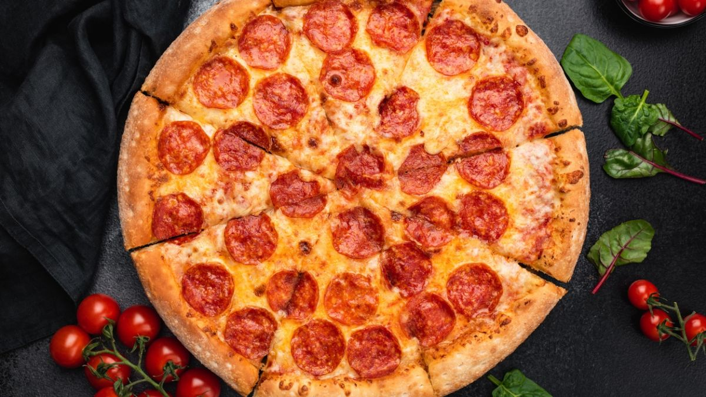

Making pizza is similar to coding. There are certain things we must do first. Like making the base, letting it rise, mould the base out, add the sauce, add the toppings, add the cheese, bake, and cut and serve. Not all pizzas end up the same, but they do start out in the same way as long as you follow the order correctly. You can have everything you need to make many different pizzas using the same base structure that is set up before hand.
There are some specific steps you need to take to make a pizza, we will list them here.
Here is the Wikipedia article about pizza.
